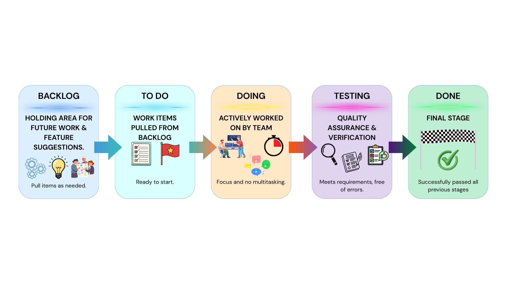

Discover how Aumazing is built - the technology and process
At the heart of Aumazing's development is the Agile Software Development framework, specifically the Kanban approach. Agile emphasizes iterative development, collaboration, responsiveness to change, and the continuous delivery of valuable software — making it ideal for projects that require ongoing refinement and feedback throughout development.
Kanban adds a layer of visual workflow management: it visualizes work, limits work in progress (WIP), and promotes continuous improvement through transparent workflow stages. The proponents selected Agile-Kanban because Aumazing includes multiple modules — user account management, child profiles, gamified pre-assessment, AI-based analytics, module recommendation, progress tracking, a parent dashboard, screen time management, and a premium therapy gateway — each needing to be designed, tested, improved, and integrated progressively.
This setup is also practical for a student capstone: it supports phased development, continuous monitoring, and incremental completion without requiring the team to freeze requirements at the start.
The choice of Agile-Kanban is grounded in several key advantages:
The Aumazing project organizes its workflow into five Kanban stages:

Figure 3.1: Kanban Board Stages Diagram
Under the Agile-Kanban umbrella, the team executes six core activities:
The Agile-Kanban process produces a rich set of deliverables that serve as both evidence of progress and developmental guides:
This section defines what Aumazing must do and how well it must do it. The requirements are based on the project objectives and the identified features: mobile access, child profile management, gamified pre-assessment, AI-driven assessment analytics, module recommendation, progress tracking, parent dashboard, screen-time monitoring, and premium therapy support.
User requirements are expressed as user stories — concise narratives that capture who the user is, what they want, and why.
👨👩👧 Parent / Guardian Stories:
🧒 Child User Story:
👩⚕️ Validator / Practitioner Story:
The functional requirements describe what the system should do, how it should react to user inputs, and how it should behave in specific situations. Aumazing has 33 individual functional requirements:
Beyond what the system does, the non-functional requirements define how well it must perform — the quality attributes and operational constraints:
Child-friendly, visually guided, understandable for parents and young users
Core screens, assessments, and dashboards load within acceptable response times
User accounts and child data protected through secure authentication
Accurate and consistent data saving without loss during normal operation
Organized codebase allowing future updates, debugging, and expansion
Runs on supported mobile devices and operating systems
Supports addition of more modules, reports, and services in future versions
Handles profiles, results, logs, and offline records without degrading performance
This section presents the software and hardware technologies required to develop, test, and implement Aumazing. The selected tools were chosen based on their suitability for a six-month capstone project, their support for cross-platform mobile development, and their compatibility with the proposed features — particularly the 2D gamified learning activities, AI-driven assessment, progress monitoring, offline support, and premium therapy gateway.
The Aumazing tech stack is thoughtfully composed, with each layer chosen for a specific purpose:
Flutter provides the cross-platform UI framework, while Flame is a modular 2D game engine built on top of Flutter. Flame's GameWidget embeds game scenes directly inside the Flutter widget tree alongside standard components (forms, dashboards, overlays, navigation). This keeps the entire app — UI, assessment scenes, and mini-games — within a single development ecosystem.
Supabase provides a Postgres-based backend platform with built-in database, authentication, storage, and related services. Every project includes a full Postgres database, making it ideal for managing parent accounts, child profiles, progress logs, assessment results, and therapy directory entries.
SQLite is a self-contained, serverless, zero-configuration SQL database engine embedded in the mobile app. It handles cached child records, offline gameplay data, and unsynced assessment logs until internet connectivity returns and synchronization occurs — ensuring children can keep playing even without Wi-Fi.
The AI layer is a separate microservice. FastAPI provides a modern, high-performance API framework, and XGBoost delivers optimized gradient boosting for gameplay-based assessment analytics. The mobile app sends gameplay indicators (response time, accuracy, retries, errors) to this API, and XGBoost returns assessment outputs for module recommendation and progress analysis.
Rather than building a complex ML recommender, the system uses assessment scores, response time, error frequency, and skill tags attached to learning modules to determine the most appropriate next activities. This practical approach aligns with the project scope.
Jitsi Meet is a free, open-source video conferencing platform with an Android SDK that can be embedded into the mobile app — providing remote consultation functionality without the cost of commercial video platforms.
To develop and test the proposed system, the proponents will need:
For families using Aumazing:
This hybrid online/offline architecture is a deliberate design decision, ensuring that children can continue learning even in connectivity-challenged environments.
A feasibility study determines whether a proposed project is practical, achievable, and worth pursuing before major resources are committed. It examines whether the project is viable in terms of resources, cost, technical capacity, operations, and schedule. For this study, the proponents examine feasibility across four dimensions.
The proposed capstone is economically feasible because it is developed as an academic prototype using available student resources and predominantly free development tools. The main costs — internet access, possible software subscriptions, testing devices, hosting services, and design utilities — are manageable within scope.
Beyond cost management, the app provides tangible practical value: it supports home-based intervention activities and helps parents continue structured learning exercises outside formal therapy sessions. While it doesn't replace licensed diagnosis or treatment, it can meaningfully reduce barriers to accessing structured home-based support.
Every required feature can be implemented using currently available, well-documented technologies:
The entire stack is sufficiently capable of supporting the proposed architecture within the project's time frame, scope, and the team's technical capacity.
The project directly addresses the identified need for structured, accessible, home-based support for children with early-stage ASD. It's designed for parent-guided use and child participation, fitting naturally into the context of home-based intervention.
Key features — guided activities, progress monitoring, recommendation support, and optional therapy access — align with the daily needs of families. Crucially, the system is positioned as a supplementary support tool, not a replacement for specialists, therapists, or medical professionals — making it practical for integration into existing care routines.
The project has a defined development period covering planning, design, development, testing, evaluation, and documentation. By using Agile-Kanban, the team can divide work into smaller tasks, monitor progress continuously, and complete modules incrementally.
Projected Schedule Flow:
This chapter presented the complete methodology of the Aumazing project, tying together the how and the with what:
The methodology demonstrates that Aumazing is structured, practical, and achievable within the intended scope of a capstone study — a project built with intention, from the process framework down to the choice of every library and tool.
You've explored the full methodology behind Aumazing — from Agile-Kanban workflows to AI-driven assessments. Built with research, designed with love for children with autism. 🌟